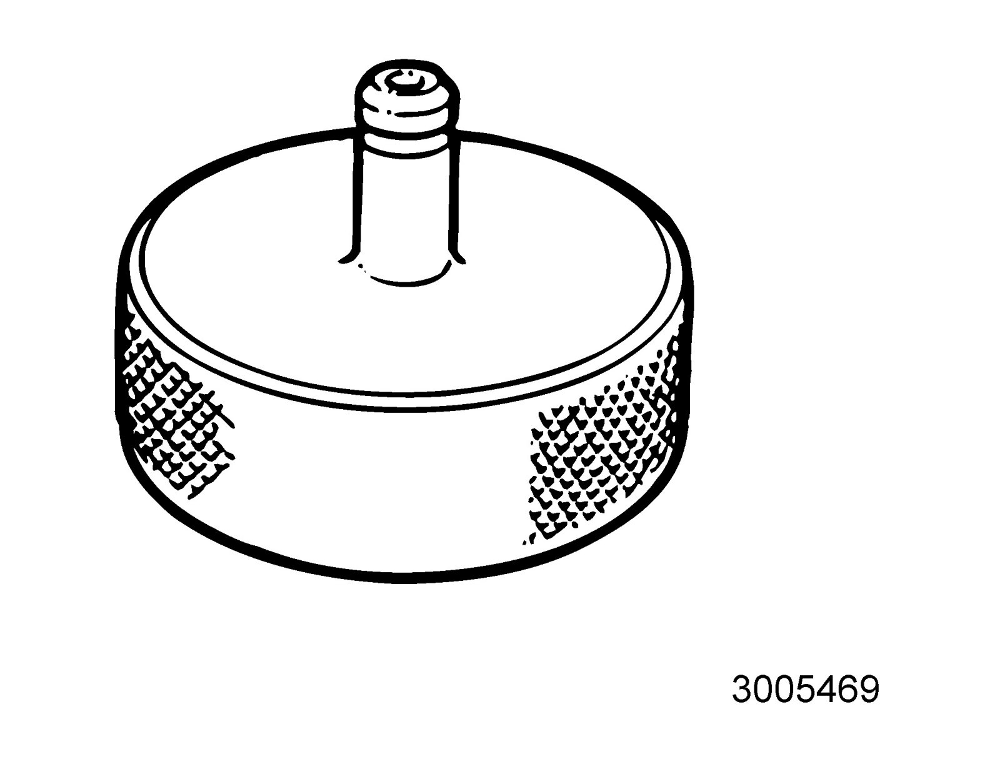
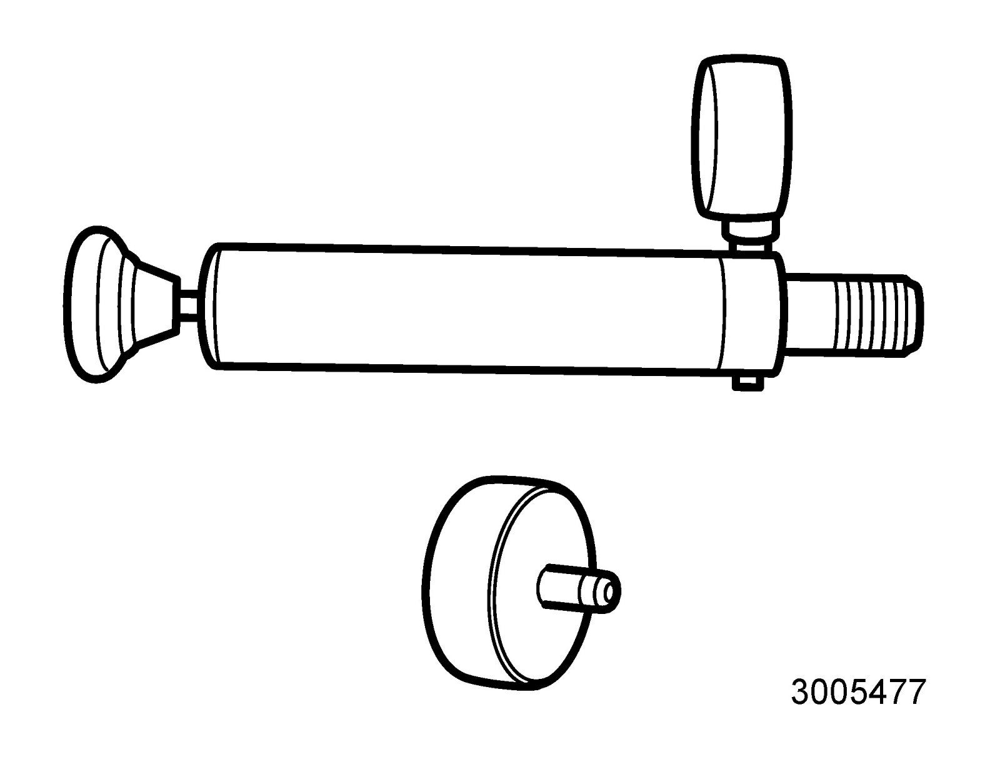
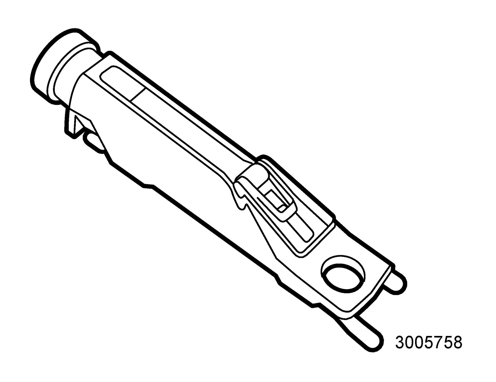
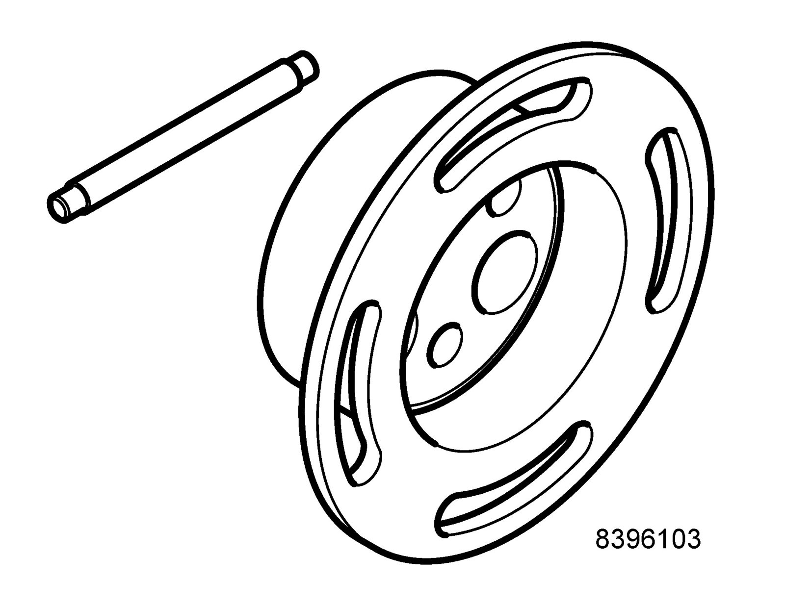
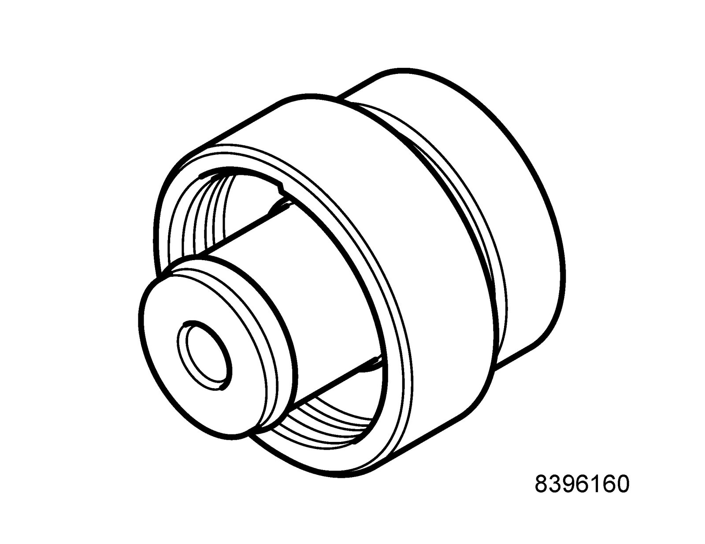
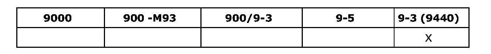
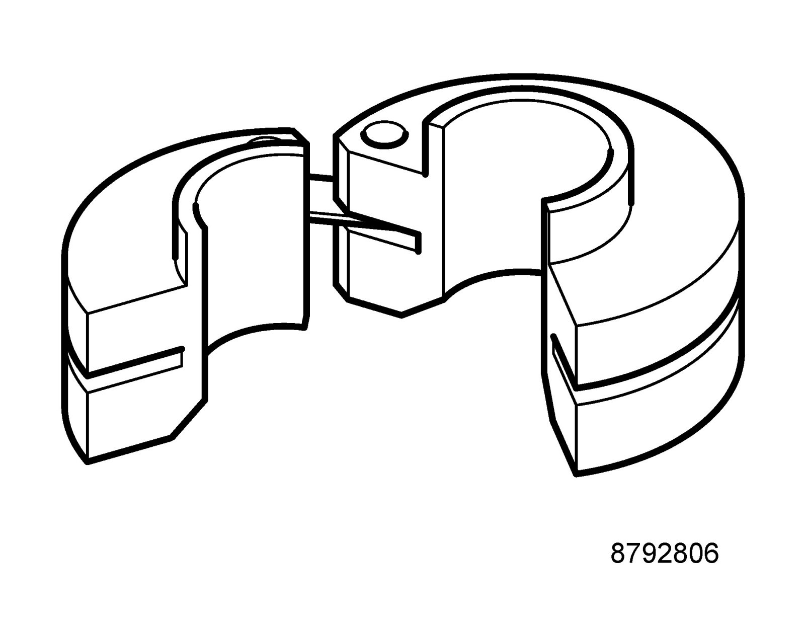

Cooling System: Tools and Equipment
30 05 469 Adapter, cooling system tester
86 12 798 Toolboard T1 Service
Used together with 30 05 477 Cooling system tester
Group: Engine
30 05 477 Cooling system tester

86 12 798 Toolboard T1 Service
Used together with 30 05 469 Adapter, cooling system tester
30 05 477 Cooling system tester

86 12 798 Toolboard T1 Service
Used together with 30 05 469 Adapter, cooling system tester
30 14 883 Pressure/vacuum pump

Group: Engine
32 025 077 Fluid tester

Used for coolant, washer fluid and battery fluid
86 12 798 Toolboard T1 Service
Group: Engine
83 95 212 Strap

Group: Engine
83 96 095 Release tool, belt circuit

86 12 798 Toolboard T1 Service
Group: Engine
83 96 103 Holding tool for changing water pump

Removing the coolant pump
Tool board
86 12 822 Toolboard T3 Engine
Group: Engine
83 96 160 Test pressure adapter, cooling system

Test pressurizing the cooling system
86 12 798 Toolboard T1 Service
Group: Engine

87 92 806 Removal tool, oil pipe, automatic transmission

86 12 855 Toolboard T5 Automatic Transmission
Group: Manual gearbox